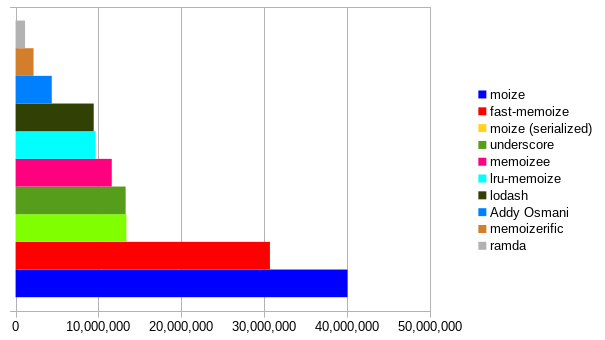
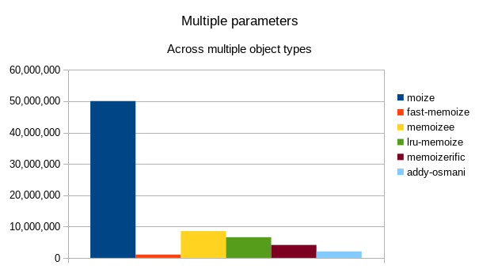

moize


moize is a consistently blazing fast memoization library for JavaScript. It handles multiple parameters (including default values) without any additional configuration, and offers a large number of options to satisfy any number of potential use-cases.
Table of contents
- Installation
- Usage
- Configuration options
- Usage with shortcut methods
- Composition
- Introspection
- Collecting statistics
- Direct cache manipulation
- Benchmarks
- Filesize
- Browser support
- Development
Installation
$ npm i moize --saveUsage
import moize from "moize";
const method = (a, b) => {
return a + b;
};
const memoized = moize(method);
memoized(2, 4); // 6
memoized(2, 4); // 6, pulled from cacheAll parameter types are supported, including circular objects, functions, etc. There are also a number of shortcut methods to memoize for unique use-cases.
Configuration options
moize optionally accepts an object of options as either the second parameter or as the first step in a curried function:
// inline
moize(fn, options);
// curried
moize(options)(fn);The full shape of these options:
{
equals: Function, // custom method to compare equality between two objects
isDeepEqual: boolean, // is the cache based on deep equality of keys
isPromise: boolean, // is the result a promise
isReact: boolean, // is the result a React component
isSerialized: boolean, // should the parameters be serialized instead of directly referenced
maxAge: number, // amount of time in milliseconds before the cache will expire
maxArgs: number, // maximum number of arguments to use as key for caching
maxSize: number, // maximum size of cache for this method
onCacheAdd: Function, // method fired when a new entry is added to cache
onCacheChange: Function, // method fire when either a new entry is added to cache or the LRU ordering of the cache has changed
onCacheHit: Function, // method fired when an existing entry in cache is used
onExpire: Function, // method to fire when a cache entry expires (in combination with maxAge)
profileName: string, // the unique identifier to give the memoized method when collecting statistics
shouldSerializeFunctions: boolean, // should functions be included in the serialization of multiple parameters
serializer: Function, // method to serialize the arguments to build a unique cache key
transformArgs: Function, // method to transform the args into a custom format for key storage in cache
updateExpire: boolean // should the cache entry's expiration be refreshed when the cache entry is hit (in combination with maxAge)
}equals
defaults to SameValueZero equality
Custom method used to compare equality of keys for cache purposes by comparing each argument.
// using lodash's deep equal comparison method
const fn = ({ foo, bar }) => {
return [foo, bar];
};
const memoized = moize(fn, {
equals(cacheKeyArgument, keyArgument) {
return cacheKeyArgument.foo === "bar" && keyArgument.foo === "bar";
}
});
memoized({ foo: "bar" });
memoized({ foo: "bar", bar: "baz" }); // pulls from cacheThe equals method receives two parameters (cache key arguments) and should return a boolean.
NOTE: This comparison is used iteratively on each argument, rather than comparing the two keys as a whole. If you want to compare the key as a whole, you should use matchesKey.
isDeepEqual
defaults to false
Should deep equality be used to compare cache keys. This is also available via the shortcut method of moize.deep
const fn = ({ foo, bar }) => {
return [foo, bar];
};
const memoized = moize(fn, {
isDeepEqual: true
});
memoized({ foo: "foo", bar: "bar" });
memoized({ foo: "foo", bar: "bar" }); // pulls from cacheisPromise
defaults to false
Is the computed value in the function a Promise. This is also available via the shortcut method of moize.promise.
const fn = async item => {
return await item;
};
const memoized = moize(fn, {
isPromise: true
});The Promise itself will be stored in cache, so that cached returns will always maintain the Promise contract. For common usage reasons, if the Promise is rejected, the cache entry will be deleted.
isReact
defaults to false
Is the function passed a stateless functional React component. This is also available via the shortcut method of moize.react.
const Foo = ({ bar, baz }) => {
return (
<div>
{bar}: {baz}
</div>
);
};
export default moize(Foo, {
isReact: true
});The method will do a shallow equal comparison of both props and context of the component based on strict equality. If you want to do a deep equals comparison, set isDeepEqual to true.
isSerialized
defaults to false
Serializes the parameters passed into a string and uses this as the key for cache comparison. This is also available via the shortcut method of moize.serialize.
const fn = mutableObject => {
return mutableObject.foo;
};
const memoized = moize(fn, {
isSerialized: true
});
const object = {
foo: "foo"
};
memoized(object); // 'foo'
object.foo = "bar";
memoized(object); // 'bar'If serialize is combined with either maxArgs or transformArgs, the following order is used:
- limit by
maxArgs(if applicable) - transform by
transformArgs(if applicable) - serialize by
serializer
NOTE: This is much slower than the default key storage, and usually the same requirements can be meet with isDeepEqual, so use at your discretion.
matchesKey
Custom method used to compare equality of keys for cache purposes by comparing the entire key.
// using lodash's deep equal comparison method
const fn = ({ foo, bar }) => {
return [foo, bar];
};
const memoized = moize(fn, {
matchesKey(cacheKey, key) {
return (
cacheKey[0].foo === key[0].foo &&
cacheKey[1].hasOwnProperty("bar") &&
key[1].hasOwnProperty("bar")
);
}
});
memoized({ foo: "bar" }, { bar: null });
memoized({ foo: "bar" }, { bar: "baz" }); // pulls from cacheThe matchesKey method receives two parameters (cache keys) and should return a boolean.
NOTE: This comparison uses the two keys as a whole, which is usually less performant than the equals comparison used iteratively on each argument. Generally speaking you should use the equals option for equality comparison.
maxAge
The maximum amount of time in milliseconds that you want a computed value to be stored in cache for this method. This is also available via the shortcut method of moize.maxAge.
const fn = item => {
return item;
};
const memoized = moize(fn, {
maxAge: 1000 * 60 * 5 // five minutes
});TIP: A common usage of this is in tandom with isPromise for AJAX calls, and in that scenario the expected behavior is usually to have the maxAge countdown begin upon resolution of the promise. If this is your intended use case, you should also apply the updateExpire option.
maxArgs
The maximum number of arguments (starting from the first) used in creating the key for the cache. This is also available via the shortcut method of moize.maxArgs.
const fn = (item1, item2, item3) => {
return item1 + item2 + item3;
};
const memoized = moize(fn, {
maxArgs: 2
});
memoize("foo", "bar", "baz");
memoize("foo", "bar", "quz"); // pulls from cache, as the first two args are the sameIf maxArgs is combined with either serialize or transformArgs, the following order is used:
- limit by
maxArgs - transform by
transformArgs(if applicable) - serialize by
serializer(if applicable)
maxSize
defaults to Infinity
The maximum number of values you want stored in cache for this method. Clearance of the cache once the maxSize is reached is on a Least Recently Used basis. This is also available via the shortcut method of moize.maxSize.
const fn = item => {
return item;
};
const memoized = moize(fn, {
maxSize: 5
});onCacheAdd
Method to fire when an item has been added to cache. Receives the cache, options, and memoized function as a parameters.
const fn = (foo, bar) => {
return [foo, bar];
};
const moized = moize(fn, {
onCacheAdd(cache, options, moized) {
console.log(cache.keys);
}
});
moized("foo", "bar"); // [["foo","bar"]]
moized("foo", "bar");
moized("bar", "foo"); // [["bar","foo"], ["foo","bar"]]
moized("foo", "bar");NOTE: When combined with onCacheChange, this method will always fire first.
onCacheChange
Method to fire when an item has been either added to cache, or existing cache was reordered based on a cache hit. Receives the cache, options, and memoized function as a parameters.
const fn = (foo, bar) => {
return [foo, bar];
};
const moized = moize(fn, {
onCacheChange(cache, options, moized) {
console.log(cache.keys);
}
});
moized("foo", "bar"); // [["foo","bar"]]
moized("foo", "bar");
moized("bar", "foo"); // [["bar","foo"], ["foo","bar"]]
moized("foo", "bar"); // [["foo","bar"], ["bar","foo"]]NOTE: When combined with onCacheAdd or onCacheHit, this method will always fire last.
onCacheHit
Method to fire when an existing cache item is found. Receives the cache, options, and memoized function as a parameters.
const fn = (foo, bar) => {
return [foo, bar];
};
const moized = moize(fn, {
onCacheHit(cache, options, moized) {
console.log(cache.keys);
}
});
moized("foo", "bar");
moized("foo", "bar"); // [["foo","bar"]]
moized("bar", "foo");
moized("foo", "bar"); // [["bar","foo"], ["foo","bar"]]NOTE: When combined with onCacheChange, this method will always fire first.
onExpire
A callback that is called when the cached entry expires.
const fn = item => {
return item;
};
const memoized = moize(fn, {
maxAge: 10000,
onExpire(key) {
console.log(key);
}
});If you return false from this method, it will prevent the key's removal and refresh the expiration in the same vein as updateExpire based on maxAge:
const fn = item => {
return item;
};
let expirationAttempts = 0;
const memoized = moize(fn, {
maxAge: 1000 * 10, // 10 seconds
onExpire(key) {
expirationAttempts++;
return expirationAttempts < 2;
}
});
memoized("foo"); // will expire key after 30 seconds, or 3 expiration attemptsNOTE: You must set a maxAge for this option to take effect.
profileName
defaults to function name and file/line location
Name to use as unique identifier for the function when collecting statistics.
collectStats();
const fn = item => {
return item;
};
const memoized = moize(fn, {
profileName: "my fancy identity"
});NOTE: You must be collecting statistics for this option to take effect.
shouldSerializeFunctions
defaults to false
A custom replacer is used when serializing to ensure functions are included in the key serialization.
const FunctionalComponent = ({ onClickFoo }) => {
return (
<button onClick={onClickFoo} type="button">
Click me!
</button>
);
};
const MemoizedFunctionalComponent = moize(FunctionalComponent, {
isSerialized: true,
shouldSerializeFunctions: true
});NOTE: You must set isSerialized for this option to take effect.
serializer
defaults to serializeArguments in utils.js
Method used in place of the internal serializer when serializing the parameters for cache key comparison. The function accepts a single argument, the Array of args, and must also return an Array.
const serializer = args => {
return [JSON.stringify(args[0])];
};
const memoized = moize(fn, {
isSerialized: true,
serializer
});NOTE: You must set isSerialized for this option to take effect.
transformArgs
Transform the arguments passed before it is used as a key. The function accepts a single argument, the Array of args, and must also return an Array.
const fn = (one, two, three) => {
return [two, three];
};
const ignoreFirstArg = args => {
return args.slice(1);
};
const moized = moize(fn, {
transformArgs: ignoreFirstArg
});
moize("foo", "bar", "baz");
moize(null, "bar", "baz"); // pulled from cacheIf transformArgs is combined with either maxArgs or serialize, the following order is used:
- limit by
maxArgs(if applicable) - transform by
transformArgs - serialize by
serializer(if applicable)
updateExpire
When a maxAge is set, clear the scheduled expiration of the key when that key is retrieved, setting a new expiration based on the most recent retrieval from cache.
const fn = item => {
return item;
};
const memoized = moize(fn, {
maxAge: 1000 * 60 * 5, // five minutes
updateExpire: true
});
memoized("foo");
setTimeout(() => {
memoized("foo"); // hits cache, which updates the expire to be 5 minutes from this run instead of the first
}, 1000 * 60);Usage with shortcut methods
moize.deep
Pre-applies the isDeepEqual option.
import moize from "moize";
const foo = (bar, baz) => {
return `${bar} ${baz}`;
};
export default moize.deep(foo);moize.maxAge
Pre-applies the maxAge option as a curriable method.
import moize from "moize";
const foo = (bar, baz) => {
return `${bar} ${baz}`;
};
export default moize.maxAge(5000)(foo);moize.maxArgs
Pre-applies the maxArgs option as a curriable method.
import moize from "moize";
const foo = (bar, baz) => {
return `${bar} ${baz}`;
};
export default moize.maxArgs(1)(foo);moize.maxSize
Pre-applies the maxSize option as a curriable method.
import moize from "moize";
const foo = (bar, baz) => {
return `${bar} ${baz}`;
};
export default moize.maxSize(5)(foo);moize.promise
Pre-applies the isPromise and updateExpire options. The updateExpire option does nothing if maxAge is not also applied, but ensures that the expiration begins at the resolution of the promise rather than the instantiation of it.
import moize from "moize";
const foo = async (bar, baz) => {
return await someApiCall(bar, baz);
};
export default moize.promise(foo);NOTE: If you do not want the promise to update its expiration when the cache is hit, then you should use the isPromise option directly instead.
moize.react
Shortcut for memoizing functional components in React. Key comparisons are based on a shallow equal comparison of both props and context.
import moize from "moize";
const Foo = ({ bar, baz }) => {
return (
<div>
{bar} {baz}
</div>
);
};
export default moize.react(Foo);NOTE: This method will not operate with components made via the class instantiation, as they do not offer the same referential transparency.
TIP: In usages that involve a lot of variety in the parameter changes, this has the potential for excessive memory consumption, as the cache will retain the history of all elements. It is therefore recommended to apply a maxSize, or to use the shortcut method moize.reactSimple, which automatically sets the maxSize to 1.
moize.reactSimple
Shortcut for memoizing functional components in React, with the cache size limited to a single entry.
import moize from "moize";
const Foo = ({ bar, baz }) => {
return (
<div>
{bar} {baz}
</div>
);
};
export default moize.reactSimple(Foo);NOTE: This method will not operate with components made via the class instantiation, as they do not offer the same referential transparency.
moize.serialize
Pre-applies the serialize option.
import moize from "moize";
const foo = (bar, baz) => {
return `${bar} ${baz}`;
};
export default moize.serialize(foo);Please note that if you want to apply shouldSerializeFunctions or provide a custom serializer, you must do so with additional options:
moize.serialize({ shouldSerializeFunctions: true })(fn);moize.simple
Pre-applies the maxSize option with 1.
import moize from "moize";
const foo = (bar, baz) => {
return `${bar} ${baz}`;
};
export default moize.simple(foo);Composition
Starting with version 2.3.0, you can compose moize methods. This will create a new memoized method with the original function that shallowly merges the options of the two setups. Example:
import moize from "moize";
const Foo = props => {
return <div {...props} />;
};
// memoizing with react, as since 2.0.0
const MemoizedFoo = moize.react(Foo);
// creating a separately-memoized method that has maxSize of 5
const LastFiveFoo = moize.maxSize(5)(MemoizedFoo);You can also create an options-first curriable version of moize if you only pass the options:
import moize from "moize";
// creates a function that will memoize what is passed
const limitedSerializedMoize = moize({
maxSize: 5,
serialize: true
});
const foo = bird => {
return `${bird} is the word`;
};
const moizedFoo = limitedSerializedMoize(foo);You can also combine all of these options with moize.compose to create moize wrappers with pre-defined options.
import moize from "moize";
// creates a moizer that will have the options of
// {isReact: true, maxAge: 5000, maxSize: 5}
const superLimitedReactMoize = moize.compose(
moize.react,
moize.maxSize(5),
moize.maxAge(5000)
);Collecting statistics
As-of version 5, you can collect statistics of moize to determine if your cached methods are effective.
import moize, { collectStats } from "moize";
collectStats();
const fn = (foo, bar) => {
return [foo, bar];
};
const moized = moize(fn);
moized("foo", "bar");
moized("foo", "bar");
moized.getStats(); // {"calls": 2, "hits": 1, "usage": "50%"}NOTE: It is recommended not to activate this in production, as it will have a performance decrease.
Introspection
collectStats
Start collecting statistics on moized functions. The same function as if you were to import collectStats directly and call it, just placed on the default object as a convenience.
moize.collectStats();getStats([profileName])
Get the statistics for a specific function, or globally.
collectStats();
const fn = (foo, bar) => {
return [foo, bar];
};
const moized = moize(fn);
const otherFn = bar => {
return bar.slice(0, 1);
};
const otherMoized = moize(otherFn, { profileName: "otherMoized" });
moized("foo", "bar");
moized("foo", "bar");
moized.getStats(); // {"calls": 2, "hits": 1, "usage": "50%"}
otherMoized(["baz"]);
moize.getStats("otherMoized"); // {"calls": 1, "hits": 0, "usage": "0%"}
moize.getStats();
/*
{
"calls": 3,
"hits": 1,
"profiles": {
"fn at Object..src/utils.js (http://localhost:3000/app.js:153:68)": {
"calls": 2,
"hits": 1,
"usage": "50%"
},
"otherMoized": {
"calls": 1,
"hits": 0,
"usage": "0%"
}
},
"usage": "33.3333%"
}
*/isCollectingStats
Are statistics being collected on memoization usage.
moize.isCollectingStats(); // false
collectStats();
moize.isCollectingStats(); // trueisMoized
Is the function passed a moized function.
const fn = () => {};
const moizedFn = moize(fn);
moize.isMoized(fn); // false
moize.isMoized(moizedFn); // trueDirect cache manipulation
The cache is available on the moized function as a property, and while it is not recommended to modify it directly, that option is available for edge cases.
cache
The shape of the cache is as follows:
{
keys: Array<Array<any>>,
size: number,
values: Array<any>
}Regardless of how the key is transformed, it is always stored as an array (if the value returned is not an array, it is coalesced to one).
NOTE: The order of keys and values should always align, so be aware when manually manipulating the cache that you need to manually keep in sync any changes to those arrays.
cacheSnapshot
The cache is mutated internally for performance reasons, so logging out the cache at a specific step in the workflow may not give you the information you need. As such, to help with debugging you can request the cacheSnapshot, which has the same shape as the cache but is a shallow clone of each property for persistence.
There are also convenience methods provided on the moized function which allow for programmatic manipulation of the cache.
add(key, value)
This will manually add the value at key in cache if key does not already exist. key should be an Array of values, meant to reflect the arguments passed to the method.
// single parameter is straightforward
const memoized = moize(item => {
return item;
});
memoized.add(["foo"], "bar");
// pulls from cache
memoized("foo");NOTE: This will only add keys that do not exist in the cache, and will do nothing if the key already exists. If you want to update keys that already exist, use update.
clear()
This will clear all values in the cache, resetting it to an empty state.
const memoized = moize(item => {
return item;
});
memoized.clear();get(key)
Returns the value in cache if the key matches, else returns undefined. key should be an Array of values, meant to reflect the arguments passed to the method.
const memoized = moize((first, second) => {
return [first, second];
});
memoized("foo", "bar");
console.log(memoized.get(["foo", "bar"])); // ["foo","bar"]
console.log(memoized.get(["bar", "baz"])); // undefinedgetStats()
Returns the statistics for the function.
collectStats();
const memoized = moize((first, second) => {
return [first, second];
});
memoized("foo", "bar");
memoized("foo", "bar");
console.log(memoized.getStats()); // {"calls": 2, "hits": 1, "usage": "50%"}NOTE: You must be collecting statistics for this to be populated.
has(key)
This will return true if a cache entry exists for the key passed, else will return false. key should be an Array of values, meant to reflect the arguments passed to the method.
const memoized = moize((first, second) => {
return [first, second];
});
memoized("foo", "bar");
console.log(memoized.has(["foo", "bar"])); // true
console.log(memoized.has(["bar", "baz"])); // falsekeys()
This will return a list of the current keys in cache.
const memoized = moize(item => {
return item;
});
const foo = "foo";
memoized(foo);
const bar = {
baz: "baz"
};
memoized(bar);
const keys = memoized.keys(); // [['foo'], [{baz: 'baz'}]]remove(key)
This will remove the provided key from cache. key should be an Array of values, meant to reflect the arguments passed to the method.
const memoized = moize(item => {
return item;
});
const foo = {
bar: "baz"
};
memoized(foo);
memoized.remove([foo]);
// will re-execute, as it is no longer in cache
memoized(foo);NOTE: This will only remove keys that exist in the cache, and will do nothing if the key does not exist.
update(key, value)
This will manually update the value at key in cache if key exists. key should be an Array of values, meant to reflect the arguments passed to the method.
// single parameter is straightforward
const memoized = moize(item => {
return item;
});
memoized.add(["foo"], "bar");
// pulls from cache
memoized("foo");NOTE: This will only update keys that exist in the cache, and will do nothing if the key does not exist. If you want to add keys that do not already exist, use add.
values()
This will return a list of the current values in cache.
const memoized = moize(item => {
return {
item
};
});
const foo = "foo";
memoized(foo);
const bar = {
baz: "baz"
};
memoized(bar);
const values = memoized.values(); // [{item: 'foo'}, {item: {baz: 'baz'}}]Benchmarks
All values provided are the number of operations per second calculated by the Benchmark suite, where a higher value is better. Each benchmark was performed using the default configuration of the library, with a fibonacci calculation based on a starting parameter of 35, using single and multiple parameters with different object types. The results were averaged to determine overall speed across possible usage.
NOTE: lodash, ramda, and underscore do not support mulitple-parameter memoization without use of a resolver function. For consistency in comparison, each use the same resolver that returns the result of JSON.stringify on the arguments.
| Name | Overall (average) | Single (average) | Multiple (average) | single primitive | single array | single object | multiple primitive | multiple array | multiple object |
|---|---|---|---|---|---|---|---|---|---|
| moize | 54,174,185 | 63,114,600 | 45,233,770 | 71,543,826 | 58,764,177 | 59,035,797 | 59,035,797 | 44,978,364 | 45,017,968 |
| fast-memoize | 37,591,552 | 74,183,948 | 999,155 | 219,504,451 | 1,582,247 | 1,465,147 | 1,210,230 | 972,741 | 814,496 |
| memoizee | 10,953,206 | 13,429,670 | 8,476,743 | 16,114,807 | 12,226,505 | 11,947,699 | 10,238,867 | 7,615,024 | 7,576,339 |
| lodash | 7,760,981 | 14,392,042 | 1,129,921 | 27,195,493 | 8,059,276 | 7,921,357 | 1,396,024 | 1,106,101 | 887,640 |
| lru-memoize | 6,818,881 | 7,216,322 | 6,421,440 | 7,761,636 | 7,016,605 | 6,870,726 | 6,472,962 | 6,323,183 | 6,468,176 |
| underscore | 5,140,473 | 9,073,217 | 1,207,730 | 22,750,266 | 2,419,458 | 2,049,928 | 1,490,129 | 1,181,751 | 951,310 |
| memoizerific | 4,320,437 | 4,784,512 | 3,856,362 | 5,608,168 | 4,374,440 | 4,370,928 | 4,568,332 | 3,455,887 | 3,544,867 |
| ramda | 3,831,370 | 6,470,175 | 1,192,564 | 15,012,589 | 2,380,971 | 2,016,966 | 1,470,378 | 1,161,390 | 945,926 |
| mem | 2,679,860 | 4,138,450 | 1,221,271 | 9,431,005 | 1,554,267 | 1,430,078 | 1,537,629 | 1,197,269 | 928,915 |
| addy-osmani | 2,504,948 | 3,224,227 | 1,785,669 | 6,430,710 | 1,560,466 | 1,681,506 | 3,215,093 | 1,184,364 | 957,550 |



Filesize
moize is fairly small (about 4.5KB when minified and gzipped), however it provides a large number of configuration options to satisfy a number of edge cases. If filesize is a concern, you may consider using micro-memoize. This is the memoization library that powers moize under-the-hood, and will handle most common use cases at 1/4 the size of moize.
Browser support
- Chrome (all versions)
- Firefox (all versions)
- Edge (all versions)
- Opera 15+
- IE 9+
- Safari 6+
- iOS 8+
- Android 4+
Development
Standard stuff, clone the repo and npm install dependencies. The npm scripts available:
benchmark=> run the benchmark suite pittingmoizeagainst other libraries in common use-casesbenchmark:alternative=> run the benchmark suite for alternative forms of caching inmoizebuild=> run rollup to build the distributed files indistclean=> runclean:lib,clean:es,clean:dist, andclean:docsclean:dist=> runrimrafon thedistfolderclean:docs=> runrimrafon thedocsfolderclean:es=> runrimrafon theesfolderclean:lib=> runrimrafon thelibfolderdev=> run webpack dev server to run example app (playground!)dist=> runsclean:distandbuilddocs=> runsclean:docsand builds the docs viajsdocflow=> runsflow checkon the files insrclint=> runs ESLint against all files in thesrcfolderlint:fix=> runslint`, fixing any errors if possiblepostpublish=> runsdocsprepublish=> runscompile-for-publishprepublish:compile=> runlint,flow,test:coverage,transpile:lib,transpile:es, anddisttest=> run AVA test functions withNODE_ENV=testtest:coverage=> runtestbut withnycfor coverage checkertest:watch=> runtest, but with persistent watchertranspile:es=> run babel against all files insrcto create files ines, preserving ES2015 modules (forpkg.module)transpile:lib=> run babel against all files insrcto create files inlib